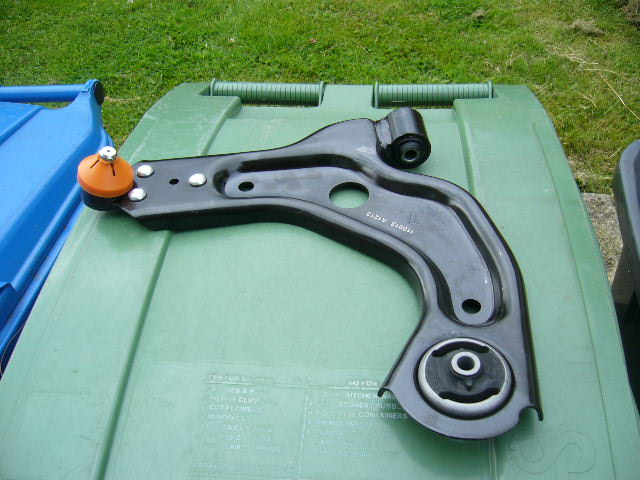

Safety first - brakes and suspension
Front brakes stripped out
All seals and pistons removed and discs chucked in the scrap bin!
Media blasted calipers and pad carriers and etch primed and painted red
Reassembled with new seals and bleed nipples from BIGGRED.
Pad carrier here and new discs masked off and painted silver in the centre at the front and red around the edges and centre rear
And everything reassembled (carefully!) and new brake fluid pulled through to get rid of the murky dodgy stuff!).
While I was on that side, I removed the inner wheel arch liner and cleared out all the mud from the lower wing corner with compressed air (went all over!), dried it all out and sprayed it with dinitrol 3125 and used a heat gun to make it flow through all the seams
Also lower control arm replaced by this one

While I was under the car, I noticed the lower brace was cracked around the welded seams, so I media blasted it, gas welded it back up and sprayed it red to match the calipers
And onto the rear.........since the bushes were well and truly worn and there was minor corrosion around the inner sill area there, I removed the rear axle and put it on the lawn for a refurb!
Rear bushes burnt out (my favourite bit!) and new ones pushed in
Heres the poor car with the axle removed patiently waiting!
Oh, and while I was there (favourite saying that!) I derusted the inner sills and painted them with KURUST and a UPOL etch primer, followed by a finnigans rubber black coating
Oh, and media blasted and sprayed the axle hanger brackets silver
As usual the bleed nipples on the rear slaves were seized (in fact 1 was already sheared off), so they went in the bin and replaced by 2 new ones as well as a new set of shoes (forgot to photograph the new shoes, but they do look sexy). Oh, and PTFE tape put on the threads of the bleed nipples so they dont seize again!
And don't forget the new fluid pushed through again.
Outer handbrake sleeves derusted and coated with dinitrol 3125.
Click here for some cosmetics